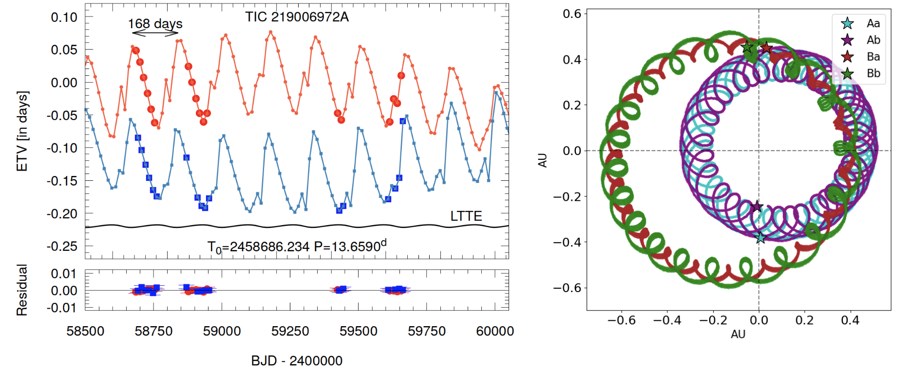
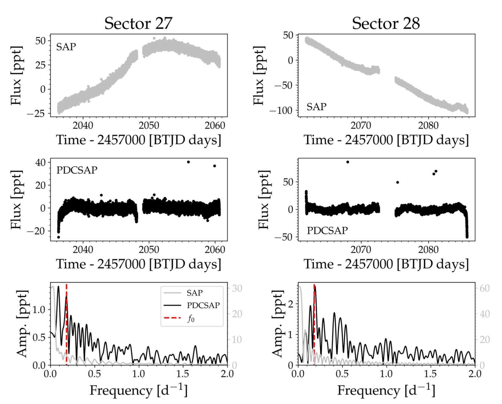
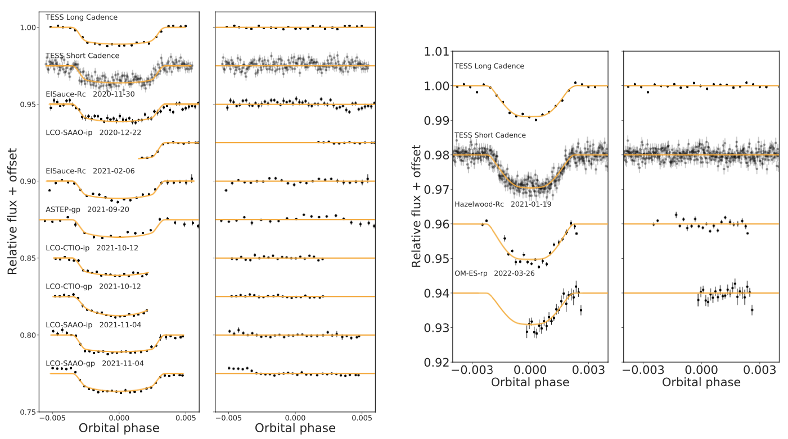

Welcome TESS followers to our latest news bulletin! This week, we are looking at three recent papers from the archive. Enjoy!
TIC 219006972: A Compact, Coplanar Quadruple Star System Consisting of Two Eclipsing Binaries with an Outer Period of 168 days (Kostov et al. 2023) :
A quadruple stellar system is a gravitationally-bound system of four stars orbiting around a common center of mass. These systems provide deeper understanding of how multiple stars form and evolve, and are particularly interesting when the orbits are compact enough for the various components to interact on observable timescales. Kostov et al. (2023) present the discovery and confirmation of a new quadruple system, TIC 219006972, consisting of two eclipsing binaries in a hierarchical 2+2+ configuration. The authors used TESS Full-Frame Image data to identify two sets of eclipses following two different orbital periods, 8.3 days and 13.7 days, and detect prominent eclipse time variations in both eclipsing binaries. Kostov et al. (2023) employ a comprehensive photometric-dynamical analysis to model the orbital and physical parameters of TIC 219006972, and find that the system has an outer orbital period of only 168 days, a factor of two shorter than the previous record holder VW LMi. The component stars of TIC 219006972 have masses between 0.48 MSun and 0.98 MSun, radii between 0.45 RSun and 1.13 RSun. The system is nearly edge-on (the mutual orbital inclination between the two eclipsing binaries is about 1 degree), has an age of about 6 Gyr, and is long-term dynamically stable. TIC 219006972 is the latest demonstration of the discovery potential of TESS for multiple star systems and raises the interesting question of whether there are quadruple systems with even shorter outer orbital periods.
Contamination in TESS light curves: The case of the Fast Yellow Pulsating Supergiants (Pederson & Bell 2023) :
Fast yellow pulsating supergiants (FYPS) are a recently-proposed new class of pulsators that oscillate on typical timescales of about a day. These are prime targets for studies of the formation, structure and evolution of massive stars, and TESS data provides an excellent opportunity to pursue such studies. Pederson & Bell (2023) present a detailed case study of TESS pixel data for 17 FYPS from the Large and Small Magellanic clouds, determining the source of the detected signals and paying close attention to potential sources of contamination. The authors were able to reproduce the detected signals for 14 of the 17 FYPS and identify the source of the signals for 4 targets -- HD 269953, HD 268687, HD 269840, and BZ Tuc. Pederson & Bell (2023) find that the detected signals are on-target only for BZ Tuc while the other three signals are consistent with false positives caused by contamination from nearby sources. Furthermore, even for the case of BZ Tuc the authors argue that the signals are likely due to data processing systematics rather than astrophysics, introduced during the removal process of the Cepheid variability from the SAP lightcurve. Thus Pederson & Bell (2023) caution that careful evaluation of FYPS source confusion is needed before this proposed new class of pulsators is firmly established.
Three long period transiting giant planets from TESS (Brahm et al. 2023) :
The longer the period of a transiting planet, the smaller the number of transits that can be detected when the observing baseline is limited. Even a single detected transit, however, makes a target worthy of further investigation and TESS provides a large number of such targets. For example, as an all-sky survey, the mission enables the systematic analysis of transiting warm Jupiters bright enough for detailed follow-up studies. Brahm et al. (2023) present the discovery and characterization of three new warm Jupiters, TOI 4406b, TOI 2338b, and TOI 2589b. All three planets were initially detected as single transits in TESS Full-Frame Image data in Cycle 1, suggesting potential warm Jupiter candidates, and were subsequently observed in short-cadence in Cycle 3 where they produced additional transits. The authors combine the TESS lightcurves with ground-based photometry from LCO, high-contrast imaging from SOAR, and spectroscopic observations from FEROS, HARPS, CORALIE, and CHIRON, to model the orbital and physical properties of the three systems. Brahm et al. (2023) find that TOI 4406b has a radius of 1 RJup, mass of 0.3 MJup, orbital period of 30 days, slight eccentricity (0.15), and age of 2.9 Gyr; TOI 2338b has a radius of 1 RJup, mass of 6 MJup, orbital period of 22.6 days, eccentricity of 0.68 and age of 7 Gyr; TOI 2589b has a radius of 1.1 RJup, mass of 3.5 MJup, orbital period of 61.6 days, eccentricity of 0.52, and age of 11 Gyr. The latter is one of the top five longest-period confirmed planets detected by TESS.

Fig. 1: Taken from Kostov et al. (2023). Left: Measured primary (red) and secondary (blue) eclipse times for binary A of the quadruple system TIC 219006972, along with the best-fit photodynamical model (red and blue lines, respectively). Right: Orbital configuration of the system as seen from above over the course of a few outer orbital orbits, showing the four component stars color-coded as listed in the legend. The observer is in the x-y plane and sees the system along the y axis (dashed vertical line).

Fig. 2: Taken from Pederson & Bell (2023). Upper panels: TESS SAP lightcurves of BZ Tuc from sectors 27 and 28. Middle panels: Same as upper panel but for PDCSAP data. Lower panels: Corresponding periodograms highlighting the proposed signal frequency as a vertical dashed line.

Fig. 3: Taken from Brahm et al. (2023). Left panel: Transits of TOI 2338b (left column) from TESS and follow-up ground-based observations, and corresponding residuals (right column). Right panel: same as left but for TOI 2589b.